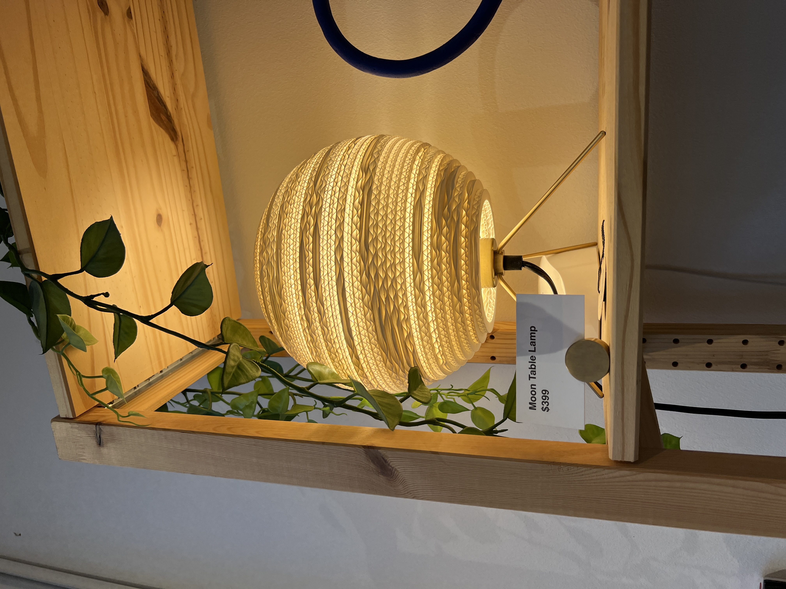

Lighting up rainy Seattle
Hey hey! Don’t mean to thrown any shade at you but this week we started making lamps!
What was my inspiration? Noelle and I took a quick little field trip to one of my favorite stores in Ballard for inspiration and we came across SO many cool 3D printed and artifacts. Here’s some really cool ones that we saw:

But what I was really inspired by was the idea of shadows in a lamp and how the design of the lamp can determine the shadows a lamp projects. And here are a couple of lamps that inspired some ideas:


(Yes, that last one really costs $399)
We also walked by one of my favorite cafe/nurseries, Root, and it had this beautiful Monstera.

I wanted to find a way to juxtapose the the symmetry of the lamps with the organic-ness of this monstera. Luckily I found this beautiful vase on Thingiverse.
I also thought that this hand holding the bulb lamp was really cool and I started wondering if I could combine the two.
So I hopped into Rhino and started working on the idea. Because I wanted the hand to sit inside the vase, I started by getting rid of the base of the hand so it would look like it’s a part of the vase.


Then, I thought of 2 variations for the vase. One with the the hand inside the entire thing and one with half transparent and half opaque. So I split the vase as well.

But I ran into some issues. I couldn’t figure out an efficient way to make it opaque besides going in gap by gap and joining it like it was a mesh hole or using “flow along surf” (thanks to Noelle for letting me know about this). And while the former approach is relatively more efficient, it still felt like too much work and given the time crunch I was on I decided to take a different approach with a half lamp and a protruding lamp so the gaps in the vase could be filled with a plant (most likely a succulent) so it would look like a hand is coming out of the ground with a bulb (like it happens in nature all the time! Lol). Here’s what the that looked like!

And here’s the full vase lamp:
Welcome to Part 2!
TLDR: Fail, fail, pivot, fail, fail, MVP.
I had my lamp design pretty much ready last week. So I spent a full day refining just the fit of the lamp around the innered. I found a way to make it fit around the little screw around the part where the wire meets the innered and there was just enough space for me to add a fitment there. It took me 3 tries to get the fitment and dimensions right but when I did finally get it right, it fit just how I hoped it would.
Next up: print the lamp! I hop over in Cura and BOOM! I‚Äôm hit with a 3.5 day printing time. I was shook to see that at first but reading through Discord it seemed like that was a reasonable estimate. So I made some adjustments for support and found a way to bring down the time. I was able to successfully bring it down to 2.5 days. And so it began printing (and so did my hatred for technology. The whine of this machine didn‚Äôt let me get any sleep this past week ü´†).
It started off really well! After 6ish hours, I had a really solid base. I felt content going to bed (whatever that meant with this noise constantly ringing in my ears). I woke up and and it was still going strong. I kept an eye on it throughout the day and it was still going strong! The skeptic in me could not believe it! And so I went to bed again thinking and hoping that it would be okay. The next morning my inner skeptic woke up to great validation when I saw this:
Turns out one of the supports came off and because the printer kept going, it caused all kinds of spaghetti printing in my lamp. Luckily, because the base was somewhat strong, I was able to fulfill the assignment requirements after I got rid of all the spaghetti from my lamp:

Because I was ahead of schedule with this assignment, I thought I’d try troubleshooting it. I made some adjustments and got another print going. Fortunately (and unfortunately), this one failed after just 10-12 hours later. The printer made spaghetti a lot sooner this time.
It seemed like the problem was happening at a certain height. So I decided to make a pivot. If I could build a flatter more modular lamp, I could increase my chances of success but also turnaround times. So I hopped on thingieverse to see if I could find something matching my requirements. I found this lamp (linked below) that I modified the fitment for so it could wrap around and with my innered and started printing.
SUCCESS! The centerpiece came out beautifully and it fit perfectly.
Then I started printing triangular pieces that I could fit in this round mould. I decided to print 4 at a time to find the balance between efficiency and safety…. FAIL! Woke up to more spaghetti. Possibly because of the height again?
So I scoped down my goal even more. A lamp that can hold a bulb and stand on its own. That is ALL that I was going for now! This class has really taught me humility these last few weeks.
The flatter pieces came out well! Just two of them though. The second one messed up again, even with the flat prints.
And this is the final product I ended up with! It’s a lamp that comes with shades to adjust the brightness (lol). It doesn’t look like a lot but HEY I easily spent over 30 hours working on this last week so please appreciate this minimalist, Nordic-inspired lamp, haha
Thanks for checking this out and reading through my failures... I mean learnings! Here are my source files.
The files were too big to upload here but you can find P2 files here: https://drive.google.com/file/d/1EBL_i_Kd30JPCDh2HHM78F1CrA4zXChm/view?usp=sharing